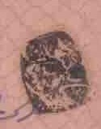
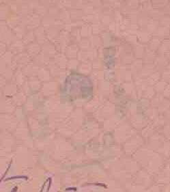
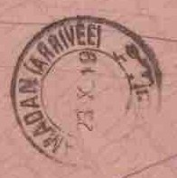
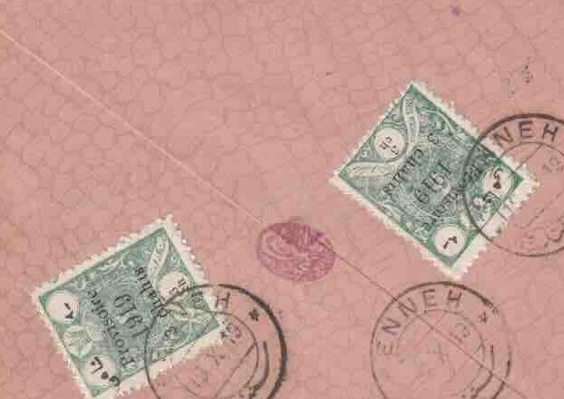
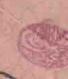

1CP-34 (black)
The Persian censor’s seal, struck in black beside the address.
سنه به همدان
Read by two censors on the way from Senneh to Hamadan: a Persian censor (CP-34) and British forces (CP-97).

The Persian censor’s seal, struck in black beside the address.

A faint octagonal mark, attributed to British forces, above the address.

HAMADAN (ARRIVÉE), 23 October 1919.

Two 3 chahi provisionals of 1919 (6 chahis), cancelled at Senneh on 19 October 1919.

A small red seal over the flap.